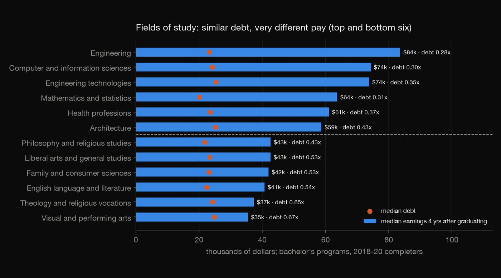
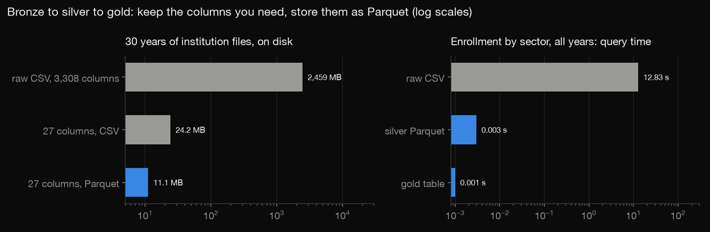
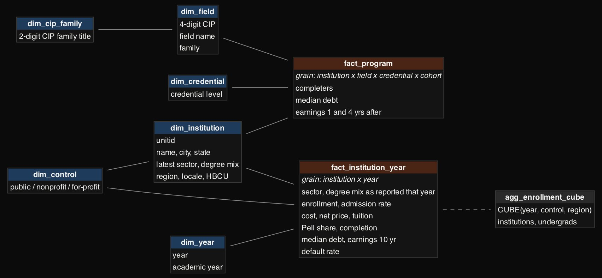
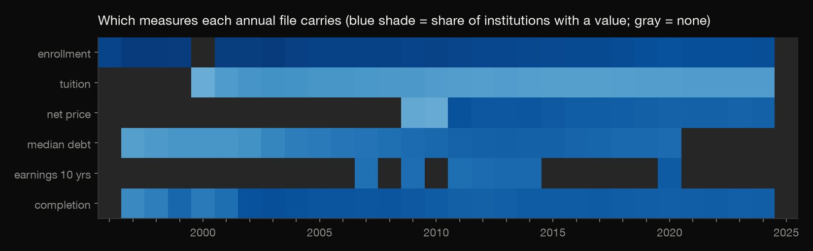
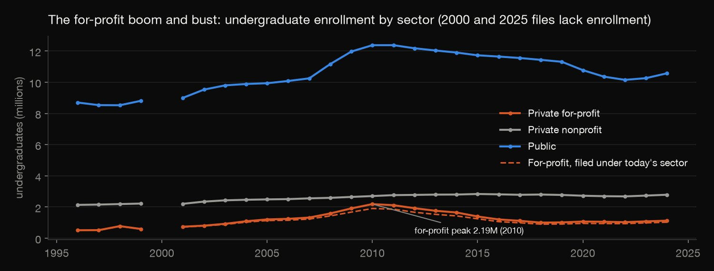
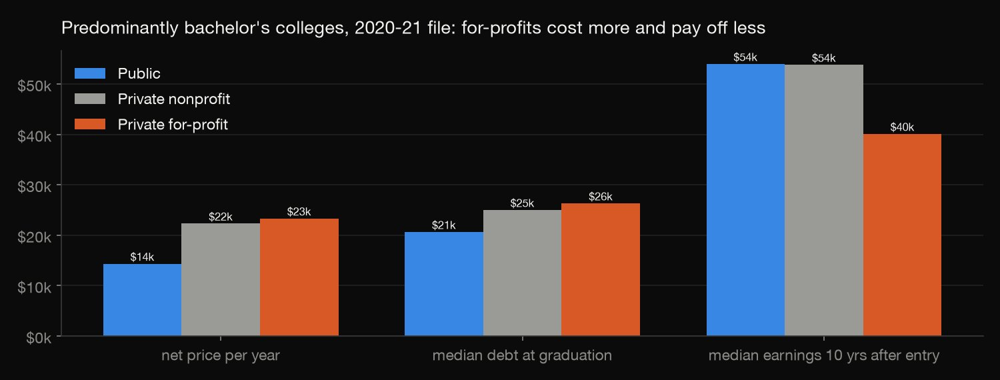
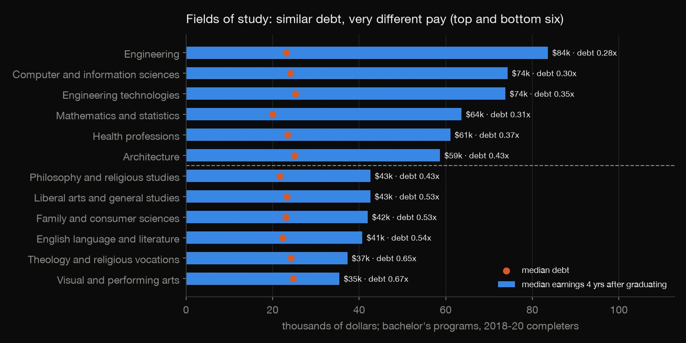

SQL · Data warehousing · 2026-10
College Scorecard Warehouse
Thirty years of US college data, 3.6 GB of raw CSVs, turned into a layered warehouse: a cleaned Parquet lake, a DuckDB star schema and a CUBE, used to follow the for-profit boom and bust and what college costs against what it pays.

Medians are across institutions, not weighted by students, and dollar amounts are not adjusted for inflation. "Not in the 2025-26 file" includes mergers and branch campuses folded into a parent, not only closures.
01 — The problem
The US Department of Education's College Scorecard is the best free source on what college costs and what it pays. It ships as 30 annual institution files of 3,308 columns each, plus field-of-study files: 3.6 GB of CSV. Every question means scanning gigabytes, and the files hide traps. Missing values are written four different ways. Measures appear in some years and not others. Colleges change sector over time.
How big was the for-profit boom, and what happened after? What do students pay and earn at public, nonprofit and for-profit colleges? Which fields of study pay off?
02 — What I built
A small warehouse in three layers, the way data teams organise a lake:
- Bronze: the raw download, untouched.
- Silver: a Parquet lake with only the 27 columns needed, typed, partitioned by year, with null tokens counted and then cleaned.
- Gold: a DuckDB star schema with two fact grains (institution × year, and program × cohort), shared dimensions, and a pre-aggregated CUBE.
A check recomputes each layer from the one below, down to the raw CSVs.
03 — How it was built
- 01
Land the raw files (bronze)
lake.pydownloads the June 2026 release and keeps it as it came:- 30 institution files (1996-97 to 2025-26), 2,459 MB;
- 8 field-of-study cohort files, 1,145 MB;
- the NCES list of field codes (CIP 2020).
Bronze is never edited, so any later layer can be rebuilt from it.
ZIP = "https://ed-public-download.scorecard.network/downloads/College_Scorecard_Raw_Data_06102026.zip" - 02
Clean into a Parquet lake (silver)
The files write a missing value four ways:
NULL,PrivacySuppressed,PSandNA. Silver first counts them per column and year (median debt is privacy-suppressed in 41,515 institution-years), then turns them all into real NULLs and types each column.Two separate wins shrink the data:
- Keeping 27 of 3,308 columns: 2,459 MB down to 24.2 MB, still as CSV.
- Storing them as Parquet: down to 11.1 MB. Parquet is columnar, so a query reads only the columns it uses.
The same enrollment-by-sector query takes 12.83 s on the raw CSVs and 0.003 s on silver, with identical totals.

con.execute(f"COPY (SELECT {year} AS year, {select(INST)} FROM {src}) TO '{out / 'part.parquet'}' (FORMAT parquet)") - 03
Model it as a star (gold)
Two fact tables at different grains share the same dimensions:
fact_institution_year: 208,759 rows, one per college per year.fact_program: 1,780,603 rows, one per college × field × credential × cohort.- Dimensions for 12,533 institutions, 449 fields of study, years, sectors and credentials.
agg_enrollment_cubepre-computes every subtotal of year × sector × region, so a dashboard never re-aggregates.
GROUP BY CUBE (f.year, f.control, i.region); - 04
Map which measures exist when
Before writing any analysis query I counted, year by year, how many colleges have each measure. Measures arrive sparsely:
- 10-year earnings exist only in the 2007, 2009, 2011–2014 and 2020 files.
- Median debt stops after 2020.
- The 2000 file has no enrollment, and the 2025-26 file has none of these measures yet.
So each question uses a year where its measures meet. The cost-and-payoff comparison uses 2020-21.

- 05
Check every layer against the one below
check.pyfails loudly if the layers stop agreeing:- For four years it recomputes from the raw CSVs: row counts, enrollment, for-profit enrollment against the cube's cell, and suppressed-value counts.
- No null token survives in silver.
- There is one fact per college per year, and every fact has a college and a valid sector.
- The cube's subtotals add up.
- The headline medians recompute in pandas straight from Parquet.
assert fp == q(con, f"SELECT undergrads FROM agg_enrollment_cube WHERE grouping_id = 1 AND year = {year} AND control = 3")[0], year - 06
Catch the past being rewritten (as-was vs as-is)
The first version took each college's sector from its latest file. The original check passed because it compared the warehouse with its own dimension. Comparing with the raw files shows the problem.
369 colleges changed sector between files:
- 206 switches from for-profit to nonprofit;
- 121 from nonprofit to for-profit;
- 26 from for-profit to public.
Grand Canyon University and Purdue University Global are among them. Filing their whole history under today's sector cut the 2010 for-profit peak from 2,186,060 to 1,905,205 students.
The fix: the fact now stores each college's sector as reported that year, and the dimension keeps the latest value for "as it is now" questions. The check now anchors the for-profit numbers to the raw CSVs.
sum(f.undergrad_enrollment) FILTER (WHERE i.control = 3) AS for_profit_by_latest_sector,
04 — Results
The for-profit boom and bust. Undergraduates at for-profit colleges went from 510,852 in 1996 to a peak of 2,186,060 in 2010, then fell to 1,068,635 by 2020 (1,124,457 in 2024).

Cost and payoff at predominantly bachelor's colleges, 2020-21 file (medians across colleges):
| Public | Nonprofit | For-profit | |
|---|---|---|---|
| Colleges | 581 | 1,265 | 171 |
| Net price | $14,327 | $22,310 | $23,312 |
| Debt | $20,632 | $25,000 | $26,312 |
| Pay, yr 10 | $53,966 | $53,794 | $40,092 |
| Debt ÷ pay | 0.38 | 0.45 | 0.61 |
| Completion | 52% | 58% | 33% |
Net price is per year. Debt is the median at graduation. Pay is the median 10 years after entry.

- Fields of study. Among bachelor's programs (2018-20 completers), debt is similar across fields but pay is not. Engineering graduates earn a median $83,620 four years out against $23,107 of debt (0.28 of a year's pay). Visual and performing arts graduates earn $35,442 against $24,702 (0.67).
- Who is still here. Of colleges in any file up to 2010, 72.7% of for-profits (3,682 of 5,068) are not in the 2025-26 file, against 39.2% of nonprofits and 24.2% of publics.
- Tuition. The median in-state tuition at public bachelor's colleges rose from $3,132 in 2000 to $9,958 in 2024; at nonprofits, from $13,495 to $34,762 (nominal dollars).

05 — What I'd do next
- Weight medians by enrollment, and adjust dollars for inflation.
- Load incrementally when a new annual file arrives, instead of rebuilding from scratch.
- Add the field-of-study files' breakdowns (by Pell status, for example) as a second program fact.